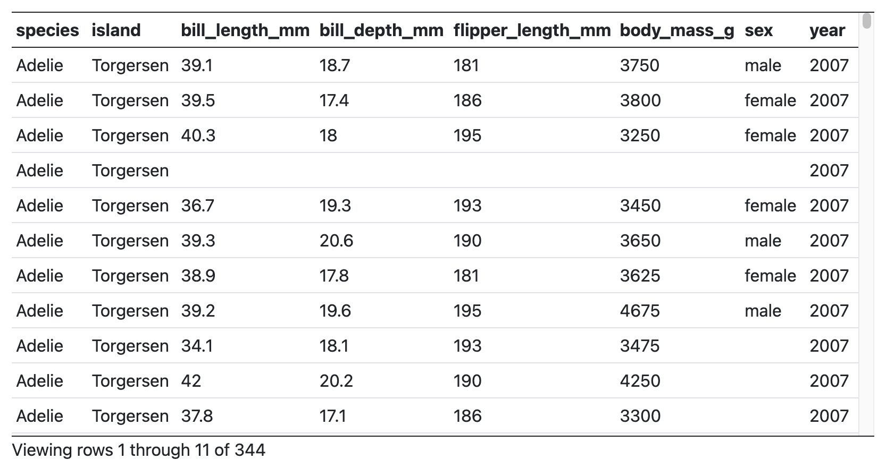
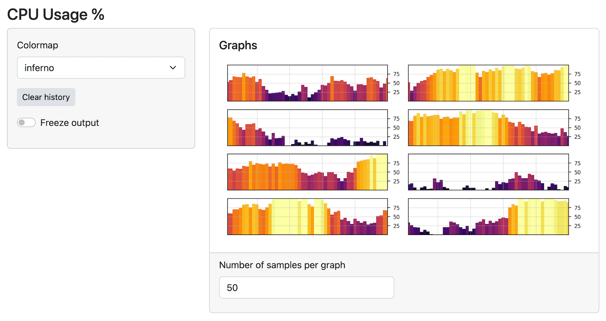
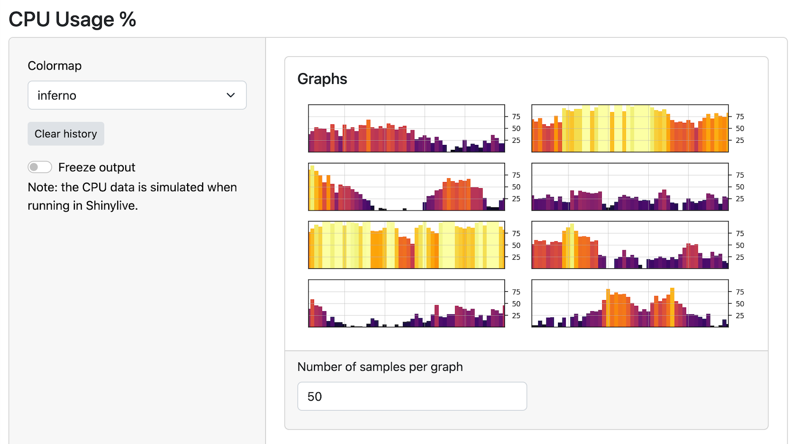

2023-06-30
Since we announced that Shiny for Python is generally available, we have been continuously expanding its features and capabilities. Below, we summarize the latest additions that make Shiny for Python an even more powerful tool for interactive web applications.
We’ve added a new, fast-scrolling data table output.
It can easily handle tables with tens of thousands of rows and supports sorting by columns – just click on the column header to sort.
In addition to the grid-style appearance, the data can be displayed with a more traditional table-like appearance.

These tables aren’t just for displaying data – they can also allow you to select rows, and use that selection as an input, as shown here:
To use the new tables, put this in your application’s UI:
ui.output_data_frame("mygrid")And in your server function, use @render.data_frame and give it a function that returns a render.DataGrid(); in turn, that function as a Pandas data frame.
@output
@render.data_frame
def mygrid():
return render.DataGrid(my_df)To get the more traditional table-like styling, return a render.DataTable() instead.
In addition to the new tables, we’ve also improved the look of the basic sidebar. Here’s what they used to look like:

Previously, the sidebar was only as tall as the content in the sidebar, but now they span the full height of the application. Here’s what they look like now:

You won’t have to change any code to get the new look – your existing code will just work!
Check out a live example here.
Join us at posit::conf(2023) and learn to build Shiny apps in Python in our hands-on workshop led by Joe Cheng, CTO of Posit. Limited spots are available, so register now!